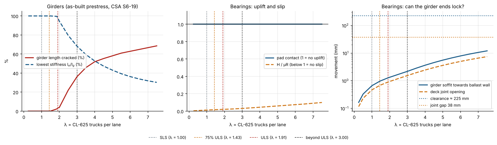
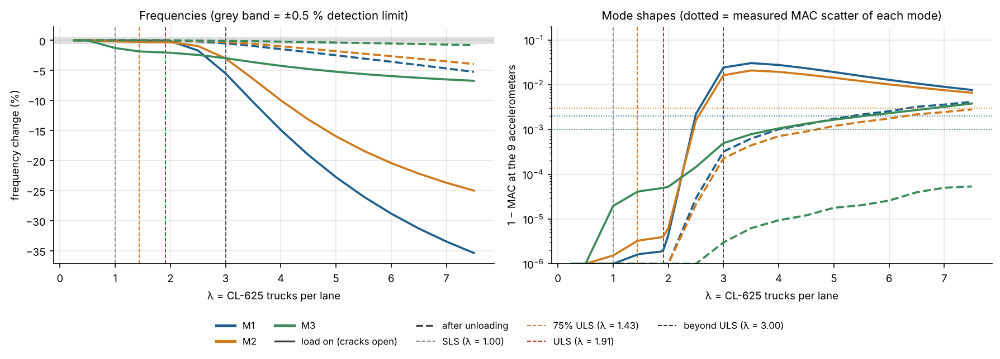
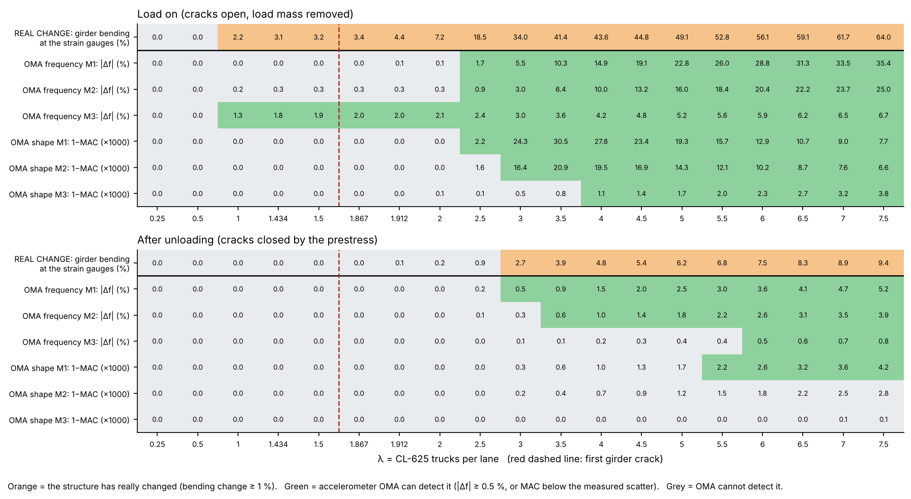
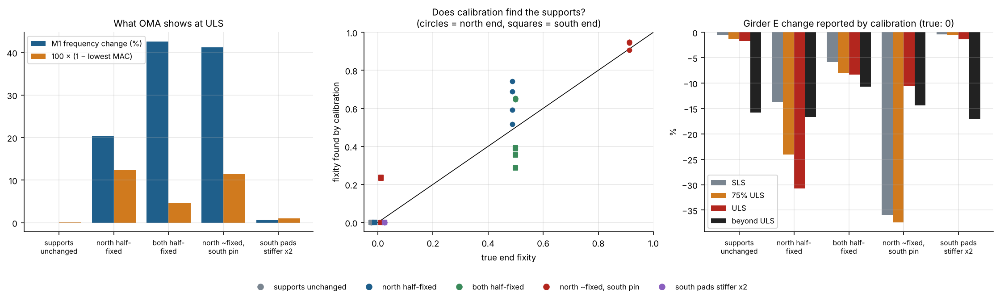
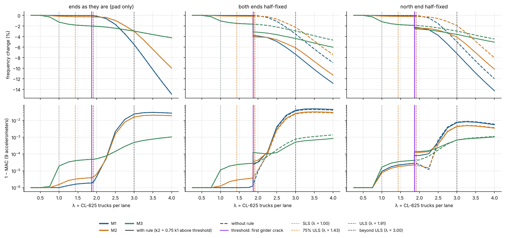
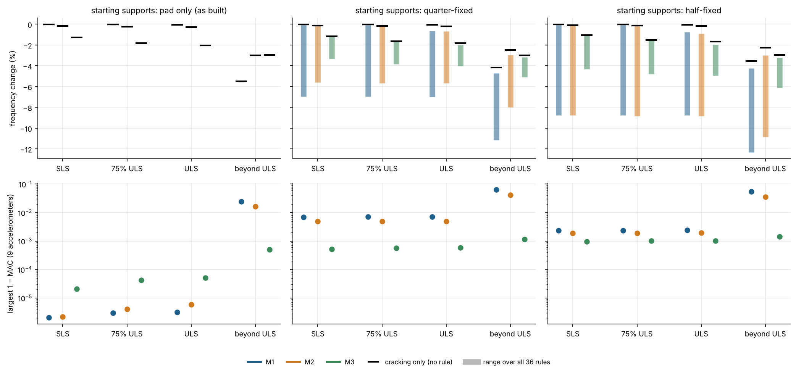
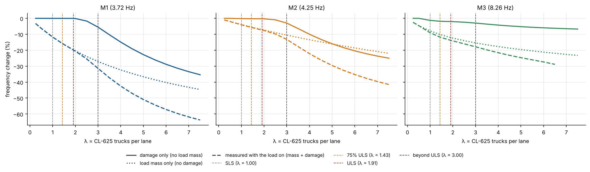
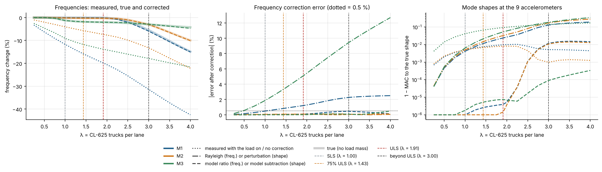

PhD research · Question 3 · Walker Road overpass (L930, west structure)
Can OMA at service level tell us anything about the bridge at ULS?
Grillage study of the Lower Walker Road Rte. 2 overpass with the as-built drawings (contract 93-4013) and CSA S6-19. All results come from walker_road/q3_run.py; numbers and figures are reproducible.
Summary
Load rating is done at the ultimate limit state (ULS), but operational modal analysis (OMA) is measured under everyday traffic. This report follows the chain of questions from the supervision meetings and answers each one with a physical reason, not an assumed factor.
1
Does the bridge physically change at ULS?
Only a little. The girders start to crack right at ULS (first crack at 1.87 trucks per lane, ULS = 1.91). The bearings do not lift off, slip or lock, so the supports stay as they are.
2
Do frequencies and mode shapes show it?
Not at ULS: the girder cracking is too small. Only M3 moves (−2 %), from deck cracking that has probably already happened under traffic. Beyond ULS M1 drops about 5 % with the load on; after unloading the prestress closes the cracks and the change mostly disappears.
3
Can OMA tell what the supports are doing?
It sees support changes clearly (much more than cracking), but a model calibration mixes up "stiffer supports" with "softer girders". The bilinear rotational-stiffness rule only matters if the girder ends are partly fixed.
4
Can the effect of the test load be removed?
Yes. The load's mass hides everything (M1 −12 % per truck pair), but dividing out the mass effect predicted by the calibrated model recovers the true frequencies within 0.5 % and the true mode shapes.
7 NBDOT Type 1 precast prestressed girders, 1.5 m deep, spaced 1.9 m; 200 mm cast-in-place deck, 65 mm asphalt, concrete barrier walls
Prestress (Dwg 11/18)
50 × 12.7 mm low-relaxation strands per girder (40 straight, 10 harped, hold-downs 3 m either side of midspan), 138 kN each at jacking; f′c = 40 MPa (35 MPa at release)
Bearings (Dwg 5/18)
14 Goodco Series EL steel-laminated elastomeric pads, 600 × 250 × 80 mm, not attached to girder or seat (held by friction), no sliding plate
Joint (Dwg 18/18)
Strip-seal expansion joint, 38 mm opening at 7 °C
Model
OpenSees grillage: one member per girder line, transverse slab members orthogonal to the girders (skew > 20°), skewed diaphragm lines, each pad as one linear spring set at its centre
Calibration
Frequency-calibrated to the OMA results (SSI-COV, 17,027 hourly blocks): M1, M2, M3, M5, M6 within 0.3 %
Sensors
9 accelerometers (surveyed positions on G1, G3, G4 and G7); used for all mode-shape results
How the bridge is loaded
The load is the CSA S6-19 design truck CL-625 (five axles: 50, 125, 125, 175 and 150 kN, total 625 kN). One truck stands in each of the two eastbound lanes, parked where it gives the largest moment at midspan. The load level is written as λ (lambda): it multiplies every axle load.
λ = 1 means one CL-625 in each lane: 1250 kN (about 127 t) on the bridge.
λ = 2 means every axle is twice as heavy, and so on. λ is a load scale, not a test procedure.
The limit states follow from the S6-19 ULS combination: live-load factor 1.70 × dynamic load allowance 1.25 × two-lane modification factor 0.90 = λ = 1.91.
Limit state
λ (trucks per lane)
Meaning
SLS
1.00
One unfactored CL-625 per lane
75 % ULS
1.43
Level of the supervisor's load-test paper (70–80 % of ULS)
ULS
1.91
1.70 × 1.25 × 0.90
Beyond ULS
3.00
To show what happens once cracking spreads
At each load level the model goes through the same loop (a sequential-linear analysis): static analysis → check which parts have cracked or changed → update their stiffness → repeat until nothing changes (this captures load sharing between girders) → modal analysis of that state. Each load level is therefore a separate linear model, valid for the small vibrations that OMA measures.
Unless stated otherwise, steps 1–3 look at stiffness changes only: the mass of the test load is left out (as if the force came from jacks pulling against ground anchors). The mass is handled in step 4.
Step 1 – Does the bridge physically change at ULS?
Girders: prestress and cracking (CSA S6-19)
Prestress losses (S6-19 8.7.4, girder age 31 years, RH 75 %): elastic shortening 140 MPa, creep 185 MPa, shrinkage 73 MPa, relaxation 48 MPa, total 446 MPa = 31.9 % of the jacking stress. Effective prestress 4,700 kN per girder.
Bottom-fibre stress under dead load and prestress: −3.9 MPa (compression) for interior girders.
Cracking when the bottom stress reaches fr = 0.4√f′c = 2.53 MPa (S6-19 8.4.1.8.1). First decompression at λ = 1.13, first crack at λ = 1.87 (interior girders G4/G5), i.e. right at ULS.
Cracked stiffness: CSA effective moment of inertia Ie = Icr + (Ig − Icr)(Mcr/Ma)³, element by element, with Icr from a cracked transformed-section analysis (Icr ≈ 0.18–0.20 Ig).
Flexural resistance (S6-19 8.8.4) is reached at about λ = 8, far beyond ULS.
Deck: local transverse cracking under the wheels from S6-19 5.7.1.2 starts at λ = 0.70, so the deck is most likely already cracked from everyday trucks.
Bearings: uplift, slip and locking (checked, not assumed)
The pads are modelled as linear springs, as in practice. Three things that could change the supports are checked at every load level:
Uplift / span change: the back edge of a pad would lift if the girder-end rotation × half the pad length exceeded the pad's compression. The dead load compresses each pad about 1.3 mm, which always wins: no uplift.
Slip: an unattached pad slides if the horizontal force exceeds friction μR (μ = 0.20, Goodco, rubber on concrete). Largest ratio 0.03 at λ = 3 and 0.11 at capacity: no slip.
Locking: under load the top of each girder end moves towards the span, so the 38 mm joint opens (by 0.9 mm at ULS). The girder soffit moves towards the ballast wall by 1.3 mm against about 225 mm of clearance: no locking.
Limit state
λ
Cracked girder elements (of 210)
Lowest Ie/Ig
Pad contact (1 = no uplift)
H/(μR) (< 1 = no slip)
Soffit movement / clearance
Joint
SLS
1.00
0
100 %
1.00
0.01
0.7 / 225 mm
opens 0.5 mm
75 % ULS
1.43
0
100 %
1.00
0.02
1.0 / 225 mm
opens 0.7 mm
ULS
1.91
7
98 %
1.00
0.02
1.3 / 225 mm
opens 0.9 mm
Beyond ULS
3.00
76
68 %
1.00
0.03
2.2 / 225 mm
opens 1.5 mm

Figure 1. What physically changes with load. Left: share of girder length cracked and lowest local stiffness; cracking starts at λ = 1.87 and the lowest stiffness falls to about 30 % near capacity. Middle: pads stay in full contact and far from slipping. Right: the girder-end movements stay one to two orders of magnitude below the joint gap and the clearance. Dashed lines mark SLS, 75 % ULS, ULS and beyond ULS.
Answer to step 1. Yes, but only the girders change: they just start to crack at ULS, and the stiffness loss spreads quickly above it. The bearings do not lift, slip or lock up to the flexural resistance, so the boundary conditions do not change with load at Walker Road.
Step 2 – Do OMA frequencies and mode shapes show it?
For each limit state the frequencies of M1–M3 and their mode shapes at the 9 accelerometers are compared with the undamaged bridge. Two situations are shown:
Load on: cracks are open (stiffness from the CSA Ie).
After unloading: the prestress closes the cracks; a small permanent stiffness loss remains, interpolated from 100 % at first cracking to 84 % at the resistance (full-scale girder tests by Zhou et al., 2019).
Detection limits: a frequency change of 0.5 % (assumed scatter after temperature compensation) and, for mode shapes, the MAC scatter measured between hourly OMA blocks (M1 0.998, M2 0.997, M3 0.999).
Limit state
Δf M1, load on
Δf M2, load on
Δf M3, load on
MAC M1
MAC M2
MAC M3
Δf M1 after unloading
SLS
−0.02 %
−0.17 %
−1.28 %
1.000
1.000
1.000
0.00 %
75 % ULS
−0.02 %
−0.25 %
−1.83 %
1.000
1.000
1.000
0.00 %
ULS
−0.05 %
−0.28 %
−2.02 %
1.000
1.000
1.000
0.00 %
Beyond ULS
−5.50 %
−3.00 %
−2.97 %
0.976
0.984
1.000
−0.51 %

Figure 2. OMA response to the physical changes (stiffness only). Left: frequencies; the grey band is the ±0.5 % detection limit. Right: mode-shape change at the 9 accelerometers (1 − MAC, log scale); dotted lines are the measured MAC scatter of each mode.
The detection grid below puts the same results side by side with the "real" change in the girders (the bending at the strain-gauge positions), to show where the structure has changed but OMA cannot tell.

Figure 3. Does the structure change (orange, top row) and can accelerometer OMA see it (green)? Top block: load on. Bottom block: after unloading. Between about λ = 2.5 and 3 after unloading, the girders have changed but OMA frequencies and shapes do not show it yet.
Answer to step 2. At SLS to ULS, only M3 changes detectably (1–2 %), and that is local deck cracking, which has most likely already happened under traffic. The onset of girder cracking at ULS is invisible to OMA. Beyond ULS, M1 drops about 5 % with the load on and the shapes change beyond the measured scatter. After unloading, the prestress closes the cracks and frequencies recover to within 0.5 % until about λ = 3. Frequencies are the better indicator; accelerometer mode shapes react later and less.
Step 3 – Can OMA tell what the supports are doing?
In the supervisor's load-test paper the calibrated support fixities changed as the load went up (some joints went from half-fixed to almost fixed, others to almost pinned), and the calibrated E changed at the same time. Walker Road's supports do not change physically (step 1), but the question is still whether OMA could tell if they did.
Method. A "true" bridge is built at each limit state: the cracking from step 1 plus one support scenario. Its OMA data are simulated at the 9 accelerometers (6 modes, with noise). The model is then calibrated to those data the usual way, with five unknowns: girder modulus Eg, rotational fixity at the north and south ends, and pad stiffness at the north and south ends. Fixity is expressed as a fixity factor γ from 0 (pin) to 1 (fully fixed), krot = 3EIγ / (L(1 − γ)).
Support scenario at ULS
M1 Δf
Lowest MAC
True fixity N/S
Found fixity N/S
True kv N/S
Found kv N/S
Found Eg change (true 0)
Supports unchanged
−0.1 %
1.000
0 / 0
0 / 0
1 / 1
1.00 / 1.00
−1.7 %
North end half-fixed
+20.3 %
0.876
0.50 / 0
0.74 / 0
1 / 1
1.39 / 1.73
−30.8 %
Both ends half-fixed
+42.6 %
0.953
0.50 / 0.50
0.65 / 0.39
1 / 1
0.89 / 1.39
−8.3 %
North almost fixed, south pinned
+41.2 %
0.885
0.90 / 0
0.95 / 0
1 / 1
1.03 / 1.03
−10.6 %
South pads twice as stiff
+0.7 %
0.990
0 / 0
0 / 0
1 / 2
1.20 / 1.47
−1.4 %

Figure 4. Left: what OMA shows at ULS for each support scenario (M1 frequency change and mode-shape change). Middle: fixity found by calibration against the true fixity (circles north, squares south; on the line = correct). Right: the girder-modulus change the calibration reports, although Eg did not change.
Answer to step 3. A change in support fixity is very visible to OMA: one half-fixed end raises M1 by 20 % and drops the MAC to 0.88, far more than girder cracking. The calibration finds which end changed, but not how much: it overestimates the fixity and compensates with a girder-modulus drop of 8–31 % that is not real. Pad vertical stiffness is hard to identify, and beyond ULS some of the girder cracking is wrongly assigned to the pads. With 9 accelerometers, support stiffness and girder stiffness cannot be cleanly separated, which is the same trade-off seen in the supervisor's paper (E changing together with the fixities).
Step 3b – Bilinear rotational stiffness at the supports
The supervisor suggested a simple rule for the support rotational stiffness: k1 up to a threshold load, then k2 = 0.75 k1 above it. The physical idea is the bearing under rotation: the contact stress moves to the front edge, the back unloads, and the support becomes more flexible.
Threshold: a physical event. The pad's back edge unloading is never reached at Walker Road (even at 4 trucks per lane), so the first girder crack (λ = 1.87) is used as the switch.
k1: three cases. The ends as built (pad only, practically pinned), both ends half-fixed, north end half-fixed.
Supports (k1)
M1 Δf just above threshold, no rule
with rule
Extra from the rule
Lowest MAC with rule
Ends as built (pad only)
−0.03 %
−0.06 %
−0.03 %
1.000
Both ends half-fixed
−0.03 %
−3.84 %
−3.81 %
1.000
North end half-fixed
−0.04 %
−2.26 %
−2.23 %
1.000

Figure 5. Bilinear rule (solid) against no rule (dashed). The magenta line is the threshold. With half-fixed ends the frequencies drop in one step at the threshold; with the ends as built nothing happens.
Step 3c – Range of rules (sensitivity)
Because the values 0.75 and the threshold are not known, every combination was run: k2/k1 = 0.5, 0.6, 0.75 or 0.9; threshold at SLS, 75 % ULS or ULS; softening at both ends, the north end or the south end (36 rules for each starting support).
Starting supports (k1)
M1 Δf at SLS
at ULS
beyond ULS
Lowest MAC up to ULS
Pad only (as built)
≈ 0 %
−0.1 %
−5.5 % (cracking)
1.000
Quarter-fixed
0 to −7.0 %
−0.6 to −7.0 %
−4.7 to −11.2 %
0.993
Half-fixed
0 to −8.7 %
−0.8 to −8.8 %
−4.2 to −12.3 %
0.998

Figure 6. Spread of the OMA change over all 36 rules (coloured bars) against cracking alone (black dash). Bottom: the largest mode-shape change at the 9 accelerometers.
Answer to steps 3b and 3c. With Walker Road's supports as built, no softening rule makes a difference: the ends are already practically pinned. If the ends carried some fixity, a softening rule could lower M1 by up to 7–9 % already between SLS and ULS, far more than girder cracking. Mode shapes change much less (lowest MAC 0.993, only just beyond the measured scatter), so support softening is mainly a frequency signal.
Step 4 – Removing the effect of the test load
To reach ULS in a real test, a heavy load must sit on the bridge, and OMA then measures the damaged bridge plus that mass. The mass alone changes the frequencies far more than the damage:

Figure 7. Solid: damage only. Dotted: the load's mass only. Dashed: what is measured with the load on (both together). All three panels share the same vertical scale. At λ = 1 the mass alone lowers M1 by about 12 %; at ULS by about 20 %, while the cracking contributes −0.05 %.
Goal: recover the modes of the damaged bridge without the added mass, using only what an engineer has: the loaded OMA results, the known load (mass and position) and the calibrated undamaged model. Four corrections were tested:
Rayleigh (mass-normalised shapes): fcorr = floaded · √(1 + φᵀΔMφ), with φ the model's mass-normalised mode shape at the load positions. This is the supervisor's mass-normalised-shape idea.
Model ratio: fcorr = floaded · f0/fmass, where the undamaged model predicts how much the mass alone shifts each mode.
Shape perturbation: remove the first-order shape change caused by ΔM, from the model's mass-normalised modes.
Shape subtraction: subtract the model's mass-only shape change.
Limit state
M1 true (no mass)
M1 measured with load
Error, Rayleigh
Error, model ratio
MAC, no correction
MAC, perturbation
MAC, subtraction
SLS
−0.02 %
−11.7 %
−0.49 %
−0.03 %
0.958
0.994
1.000
75 % ULS
−0.02 %
−15.8 %
−0.83 %
−0.06 %
0.933
0.979
1.000
ULS
−0.05 %
−19.8 %
−1.20 %
−0.09 %
0.907
0.947
1.000
Beyond ULS
−5.50 %
−31.4 %
−2.27 %
−0.45 %
0.859
0.814
0.988

Figure 8. Left: frequencies measured with the load on (dotted), true without the mass (thick, light) and corrected with the model ratio (dashed), which lies on the true curves. Middle: correction error; the Rayleigh correction (dash-dot) grows with load, especially for M3. Right: mode-shape error to the true shape; model subtraction (dashed) removes almost all of it.
Answer to step 4. The test-load mass hides the damage, but it can be removed. Dividing out the mass effect predicted by the calibrated model recovers the true frequencies within 0.5 % and the true mode shapes (MAC ≥ 0.988) up to beyond ULS. The simpler Rayleigh correction with mass-normalised shapes works for light loads (error below 0.5 % up to about one truck per lane) but grows to 1–2.5 % for M1 and more for M3 with heavy loads, because a heavy mass also changes the mode shapes it relies on.
Conclusions
At ULS Walker Road changes only slightly. The girders just start to crack; the bearings neither lift, slip nor lock. The boundary conditions do not change with load.
OMA cannot see the onset of girder cracking at ULS. Frequencies and mode shapes stay within the measurement scatter until the load goes beyond ULS. Once the load is removed, the prestress closes the cracks and most of the signal disappears again.
Support changes would be far more visible than cracking, mostly in the frequencies. But a calibration cannot cleanly tell support stiffness from girder stiffness with 9 accelerometers: it finds the right end but reports a girder-modulus change that is not real.
The mass of the test load dominates loaded measurements, and the calibrated model can remove it almost exactly. So OMA under load is usable if the load is known and the model is calibrated.
So, can OMA at service level say anything about ULS? For a prestressed girder bridge like Walker Road, not by itself: the changes that matter for ULS happen too late and are partly reversible. It can still verify that the supports behave as assumed, and, under a known test load with mass correction, it can show changes once the girders crack.
Assumptions and limitations
Prestress losses: S6-19 method with RH 75 %, release at 1 day, deck at 60 days, age 31 years. The 31.9 % total is an upper estimate (gross section, no elastic gain at deck casting).
Cracked-section modular ratio uses an in-situ Ec of 1.3 × the S6 value.
Stiffness after unloading (100 % → 84 %) comes from full-scale girder tests, not from a code.
Deck equivalent span Se = 1.9 m (girder spacing); check S6-19 Fig. 5.3.
Pad rubber thickness 70 mm from G·A/Ks with Goodco G = 0.81 MPa (55 durometer); the drawings do not give the layers.
Detection limits: 0.5 % for frequencies is assumed; it should be replaced by the real scatter after temperature compensation from the Walker Road data.
Boundary-condition identification uses one noise sample per case; repeating it with many samples would give confidence intervals.
Model: a grillage with sequential-linear updating, not a full nonlinear (fibre-section) model. The truck mass is rigidly attached (no suspension).
To verify in S6-19: two-lane factor 0.90 (Table 3.8.4.2), dynamic allowance 0.25 (3.8.4.5.3), loss and creep/shrinkage clauses (8.7.4, 8.4.1.4–5), effective moment of inertia clause.
Glossary
OMA
Operational modal analysis: frequencies and mode shapes identified from ambient vibration.
λ
Load level in CL-625 trucks per lane, both lanes loaded.
SLS / ULS
Serviceability / ultimate limit state.
MAC
Modal assurance criterion: 1 means two mode shapes are identical, lower means they differ.
Ig, Icr, Ie
Gross, fully cracked and effective (CSA) moment of inertia of the composite girder.
Fixity factor γ
0 = pinned end, 1 = fully fixed end.
"Jacked" / stiffness only
The same force without the load's mass, as if applied by jacks against ground anchors.
Mass-normalised shape
A mode shape scaled so that φᵀMφ = 1; needed to compute how an added mass shifts a frequency.